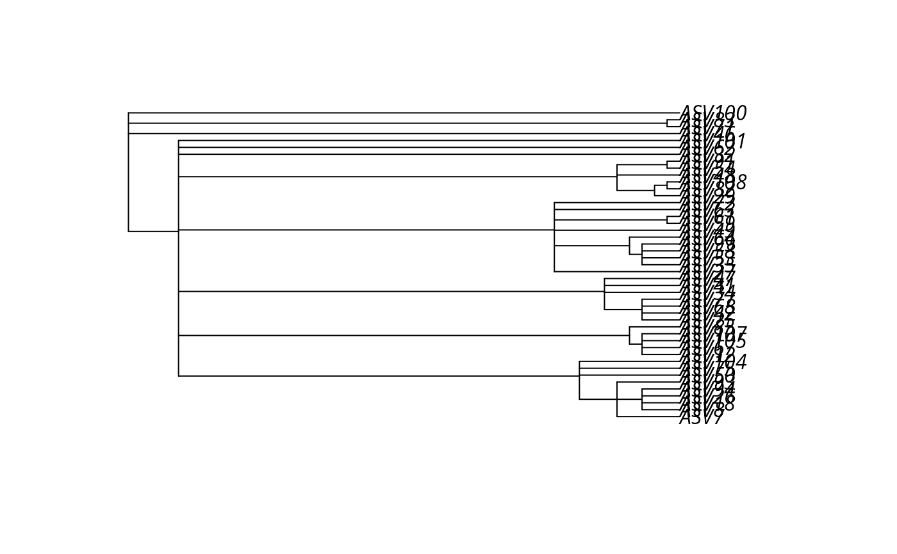
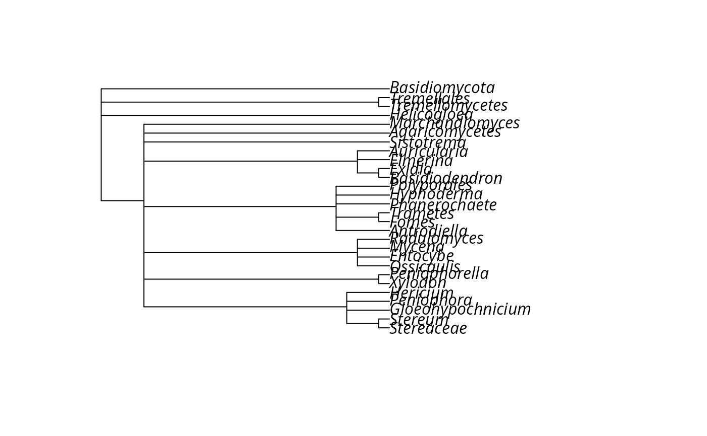

Creates a phylo object from a taxonomy table with hierarchical taxonomic ranks as columns.
Usage
taxo2tree(
physeq,
ranks = c("Domain", "Phylum", "Class", "Order", "Family", "Genus", "Species"),
internal_node_singletons = TRUE,
use_taxa_names = TRUE
)Arguments
- physeq
(required) A
phyloseq-classobject- ranks
Character vector specifying the column names to use as taxonomic ranks, ordered from highest to lowest. By default: c("Domain", "Phylum", "Class", "Order", "Family", "Genus", "Species").
- internal_node_singletons
Logical, if TRUE, create internal nodes for singleton. If FALSE, internal nodes with only one descendant are discarded.
- use_taxa_names
Logical, if TRUE (default), use the taxa names (rownames, e.g., ASV_1, ASV_2) as terminal leaves. If FALSE, collapse identical taxonomy paths and use the lowest rank value as tip labels. This is useful for creating cleaner trees that show only taxonomic structure without individual ASV/OTU names.
Examples
# \donttest{
library(MiscMetabar)
#> Loading required package: ggplot2
#> Loading required package: dplyr
#>
#> Attaching package: ‘dplyr’
#> The following objects are masked from ‘package:stats’:
#>
#> filter, lag
#> The following objects are masked from ‘package:base’:
#>
#> intersect, setdiff, setequal, union
data(data_fungi_mini)
tree <- taxo2tree(data_fungi_mini,
ranks = c("Domain", "Phylum", "Class", "Order", "Family", "Genus")
)
plot(tree)

# Without internal node singletons
tree_wo_singletons <- taxo2tree(data_fungi_mini,
ranks = c("Domain", "Phylum", "Class", "Order", "Family", "Genus"),
internal_node_singletons = FALSE
)
length(tree$node.label)
#> [1] 56
length(tree_wo_singletons$node.label)
#> [1] 18
# Without taxa names (collapse identical paths)
tree_no_taxa <- taxo2tree(data_fungi_mini,
ranks = c("Domain", "Phylum", "Class", "Order", "Family", "Genus"),
use_taxa_names = FALSE
)
plot(tree_no_taxa)

# }
if (FALSE) { # \dontrun{
# Attach the taxonomic tree to a phyloseq object and plot it with ggtree
library(MiscMetabar)
library(ggtree)
data(data_fungi_mini)
data_fungi_mini@phy_tree <- phyloseq::phy_tree(
taxo2tree(data_fungi_mini,
ranks = c(
"Domain", "Phylum", "Class", "Order", "Family", "Genus",
"Genus_species"
)
)
)
ggtree(data_fungi_mini@phy_tree) +
geom_nodelab(size = 2, nudge_x = -0.2, nudge_y = 0.6) +
geom_tiplab()
} # }